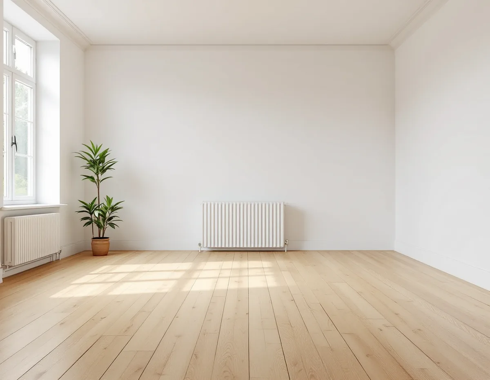
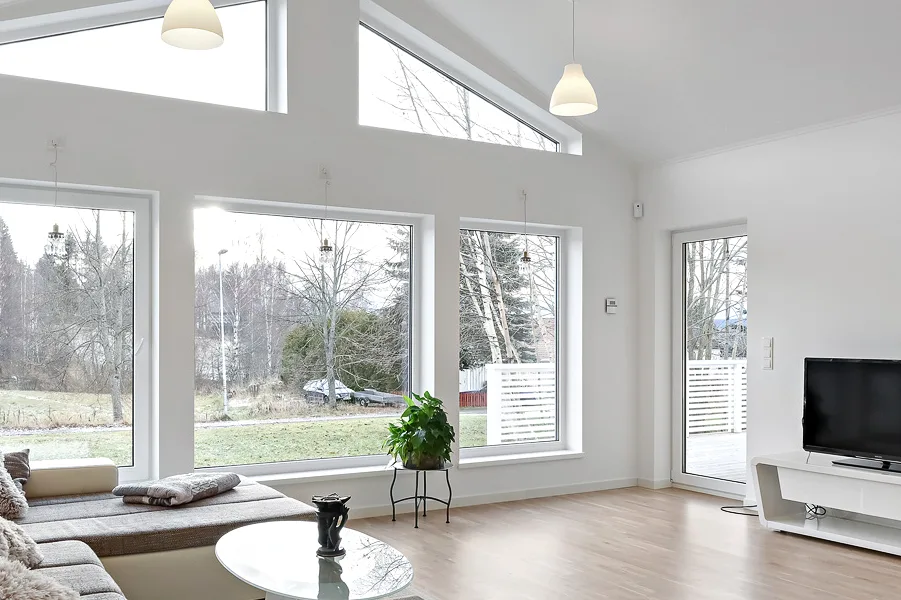

Platsbesök
Vi bestämmer träslag och skick och pratar om vilken ton du är ute efter.

När ett trägolv slipas ner till rent trä finns ett tillfälle att ändra dess ton, ljusare med vitt pigment eller mörkare med en infärgad olja.
Beskriv jobbet kort.
Något blev fel. Kontrollera uppgifterna eller ring 08 12 410 276.
Vi tittar på jobbet på plats innan du får offert.
Du ser vad som ingår och vad det kostar.
Vi drar av ROT direkt och sköter ansökan.
Geal Entreprenad AB, Bromma. Org.nr 559303-7566.

Det ställer högre krav på slipningen än en klar lack. Geal Entreprenad AB slipar och ytbehandlar trägolv i villor och radhus i Älvsjö, och varje kulörbyte börjar med en provyta på ditt eget golv.
Älvsjö var ett av de stationssamhällen som växte upp när järnvägen byggdes ut och som på 1910-talet fick status som municipalsamhälle med egen administration och beskattningsrätt. Det skriver Stockholms stad i vägledningen Varsam utveckling av småhus- och villaområden. Stadsplanen för Älvsjö villastad togs fram av Per Olof Hallman. Villastäderna fick tomter på 1 500–3 000 kvadratmeter, och när nya planer togs fram för delar av villastäderna på 1930-talet blev tomterna 700–1 000 kvadratmeter.
Sedan dess har tomter delats och nya hus byggts, och vägledningen konstaterar att olika tidsepoker därför finns representerade. I stadsdelen Älvsjö fanns 730 bostäder 2025, varav 214 i småhus, enligt stadens områdesfakta. I stadsdelen Örby slott var 249 av 944 bostäder småhus. I ett område med hus från olika decennier kan golven också vara av helt olika slag.
Golvbranschens riktlinjer för oljebehandling, OLJA 22, säger att du som beställare ska visa ett prov på den kulör du vill ha när pigmentering är föreskriven. Därefter bör den som utför arbetet göra ett prov på den aktuella golvytan och visa det för dig innan behandlingen startar. Provet ska göras på samma träslag och fabrikat som sedan behandlas. Samma ordning gäller enligt HÅRDVAXOLJA 22 för pigmenterad hårdvaxolja.
En färgkarta visar inte hur just ditt golv tar emot pigmentet. HÅRDVAXOLJA 22 påpekar att slipningen i hög grad påverkar utseendet med en pigmenterad produkt, och därför görs provet på ett golv som har slipats på samma sätt som resten ska slipas.
Vill du bevara ljusheten i ett golv av fur eller gran finns ett tredje sätt. Enligt OLJA 22 bevarar lut före grundbehandlingen ljusheten i kombination med vit olja, eller ger en djupare kulör, på de träslagen.
SLIP 22 säger att inga slipränder får finnas kvar efter färdigslipningen, annat än efter slutpappret, och att det är extra viktigt vid pigmentering. Finslipningen med bandmaskin ska göras i träets längdriktning, och i hörn och på andra ställen som sicklas ska ytan putsas med samma grovlek som vid den sista slipningen.
HÅRDVAXOLJA 22 råder också att mindre hål och repor spacklas, framför allt vid pigmentering. Mellan lagren mellanslipas en opigmenterad yta vid behov, men det gäller inte en pigmenterad yta.
Mönsterlagda golv, som fiskben och rutmönster, slipas enligt SLIP 22 normalt först diagonalt och sedan i rummets längdriktning eller från det håll ljuset kommer.
Hårdvaxolja stryks enligt tumregeln 1 + 1, två tunna lager, och den totala mängden ska inte överstiga 80 gram per kvadratmeter efter alla lager, inklusive pigmentering. En pigmenterad produkt behöver torka minst 12–24 timmar beroende på produkt, mot 8–12 timmar för en opigmenterad. Vid manuell applicering räcker en liter opigmenterad hårdvaxolja till 24 kvadratmeter per lager, medan en pigmenterad produkt räcker till 20–30 kvadratmeter per liter. Rummet bör hålla 20 grader och en luftfuktighet kring 50 procent, och vid låg temperatur eller hög fukt blir torktiderna väsentligt längre.
Har huset golvvärme ska den vridas ner betydligt under behandlingen, och golvets yta ska hålla 20 ± 2 grader. När ytan har härdat kan temperaturen höjas successivt under 2–3 dagar, till högst 27 grader.
Skadas en pigmenterad yta måste skadan enligt UNDERHÅLL 22 punktrenoveras innan golvet behandlas på nytt. Ska golvet bytas i stället för att slipas finns mer under golvläggare i Älvsjö och på sidan om golvläggning.
Vi bestämmer träslag och skick och pratar om vilken ton du är ute efter.
Du visar en kulör du vill ha, och vi föreslår produkt och metod.
Slipning, spackling och pigmenterad behandling står som egna poster.
Golvet slipas fritt från slipränder, och hål och repor spacklas.
Vi lägger ett prov på ditt golv som du godkänner innan resten behandlas.
Pigmenterad olja eller hårdvaxolja i tunna lager med torktid emellan.
Att slipa golv i ett småhus är ett rotarbete enligt Skatteverket, och avdraget gäller arbetskostnaden. Pigment, olja och andra material ger inget avdrag, och inte heller resor.
Avdraget är 30 procent av arbetskostnaden, högst 50 000 kr per person och år. Tillsammans med rutavdrag är taket 75 000 kr. Geal drar av det på fakturan.
Golvytan, träslaget, hur mycket som behöver spacklas och om du väljer pigmenterad olja, hårdvaxolja eller lut betyder mest. Efter ett gratis platsbesök får du ett skriftligt kostnadsförslag.
Parkett, trägolv, klinker och slipning.
Golvläggning i Stockholm →Takbyte, takbesiktning och plåtarbeten.
Takläggare i Älvsjö →Långbro, Herrängen och Långsjö.
Takrenovering i Älvsjö →Villatomten, prickmarken och vattnet.
Attefallshus i Älvsjö →Villorna, träbjälklaget och golvvärmen.
Badrumsrenovering i Älvsjö →Byggrätt, gamla planer och planändring.
Byggföretag i Älvsjö →Puts nedtill, panel upptill.
Fasadmålning i Älvsjö →Villastad, nya grannhus och puts på trä.
Fasadrenovering i Älvsjö →Fönster och tilläggsisolering.
Fönsterbyte i Älvsjö →Småspröjs och fönsterluckor.
Fönsterrenovering i Älvsjö →Golvvärme under trägolv i äldre villor.
Golvläggare i Älvsjö →Villastad, flerlägenhetsvillor och kök i lager.
Köksrenovering i Älvsjö →Villastad, egnahem och småstugor i Älvsjö.
Målare i Älvsjö →Plåttak för solceller, kupor och verandor i Älvsjö.
Plåtslagare i Älvsjö →Staket, grind och plank i villastaden.
Snickare i Älvsjö →Vinden, kupan och byggrätten.
Takbyte i Älvsjö →Bårder och dekor i villastaden.
Tapetsering i Älvsjö →Byggrätt, trädgårdssida och volym.
Tillbyggnad i Älvsjö →Villastaden, elen och köket.
Totalrenovering i Älvsjö →Eller ring 08 12 410 276, mån–fre 08–17.
Beskriv jobbet kort.
Något blev fel. Kontrollera uppgifterna eller ring 08 12 410 276.